In search of balance
Finding the elusive core microbiome
![]()
Tuesday, the 22th of September, 2026
Overview
- Storytelling
- Microbial ecology
- Reference databases
- Environmental DNA
- Sequence saturation
- Tangential thoughts
Gut microbial ecology is linked with disease
Exposition
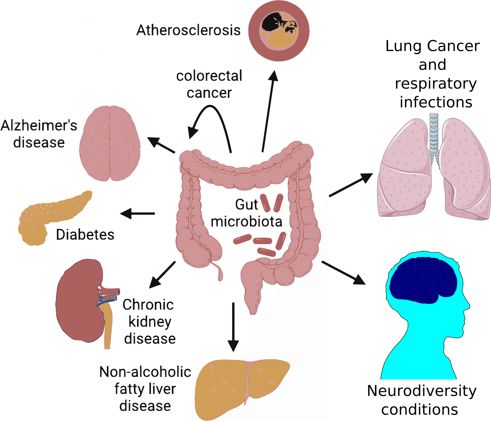
Conditions are dependent on many factors
Exposition
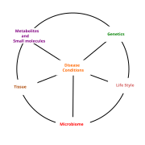
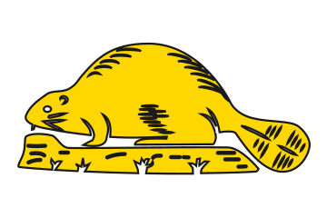
Keystone microbiota define homeostasis
Inciting incident
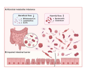
Hypothesis-driven
Hypothesis-driven
Exploratory + Instinct!
Pangenomes are the combined information of genomes by taxonomic bins
Rising action
Biologically informed database design smooths out noise
Rising action
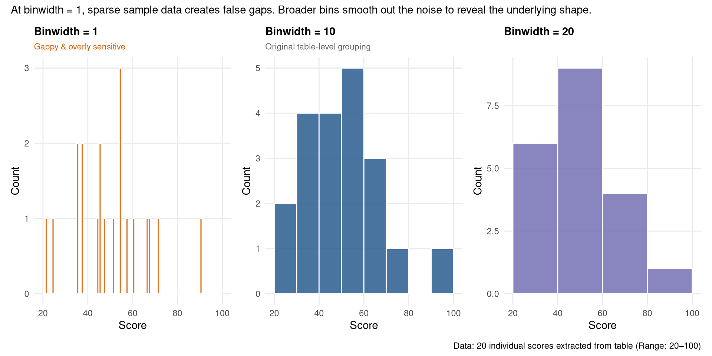
Benchmarking shows an improvement in precision
Rising action
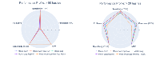
Shotgun sequencing is big, messy data of an entire environment
Rising action
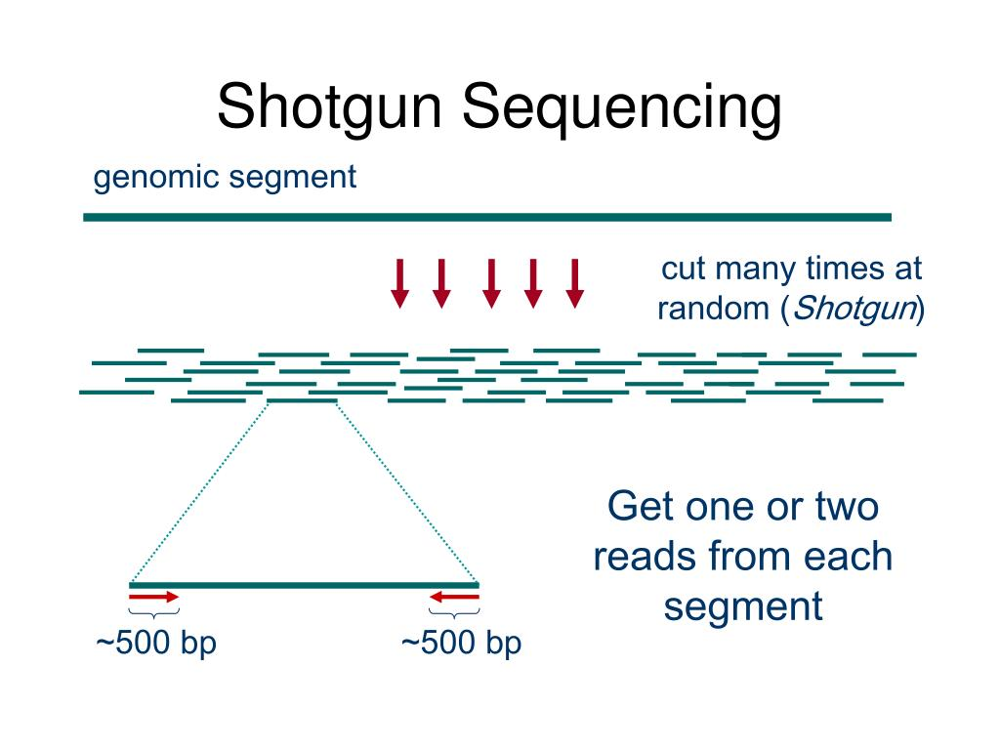
Microbiome sampling has pros and cons
Rising action
Correcting metadata by filtering for depth & breadth
Rising action
Depth: Are we seeing the sequence information more than once?
\[ Saturation = 1 - \frac{breadth}{depth} \geq 25\% \]
Breadth: Are we seeing enough sequence information?
\[ Total\ breadth = \sum_{\text{sequence info}\ \in\ \text{Sequence}} \text{sequence info} \geq 1\ \text{MBp} \]
Bio-binning and correcting metadata found core microbiome species
Climax
8% of our 36,000 human stool samples
- Anaerobic to aerobic
- Obligate to facultative
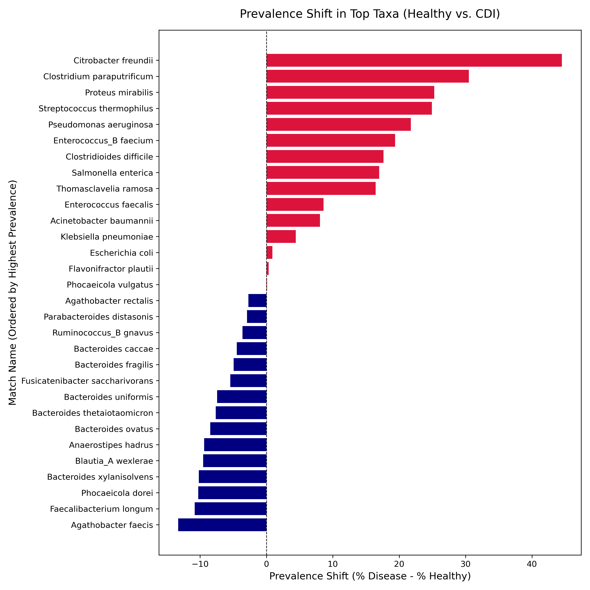
Functional profiles show what communties can do differently!
Falling action
Intersect the found pangenome species with the all samples of specific metadata
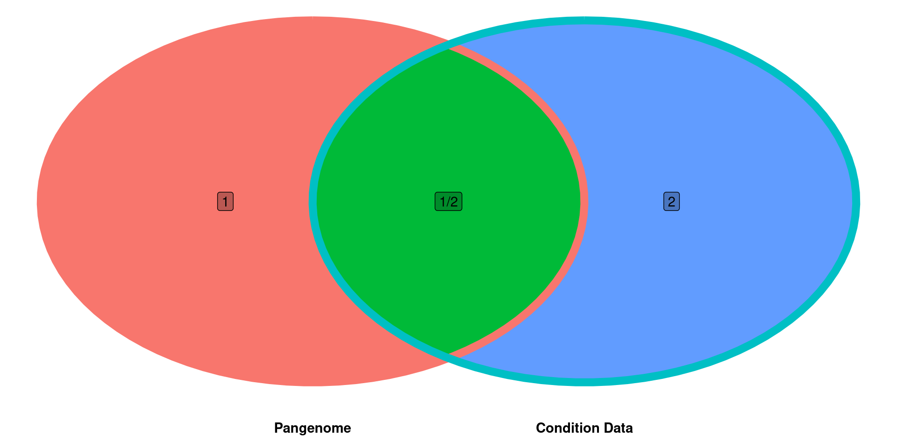
Isolate and extract only the intersecting signal
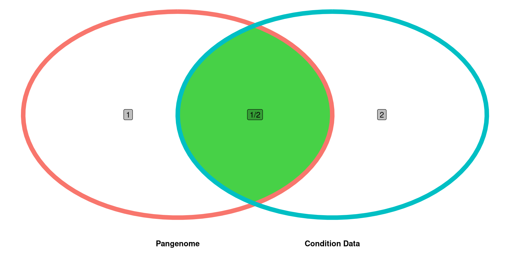
This is the pangenomic profile of the sample conditions
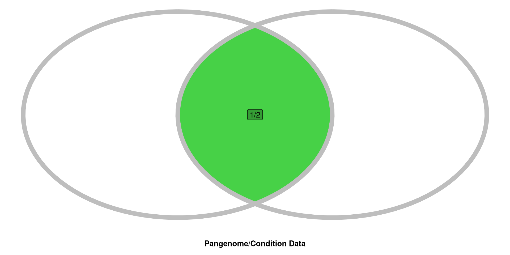
Acknowledgments
Resolution
- C. Titus Brown
- Annie
- Bry
- Gina
- Tina
- Tamer
- Mo
- Enoch Baldwin
- Carole Hom
Data Intensive Biology Lab